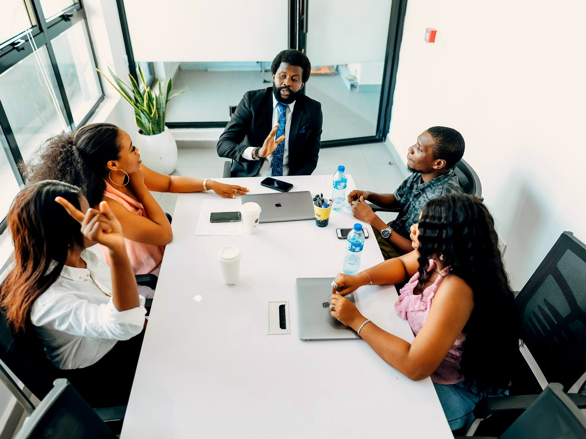

Listen
We start by understanding your organisation, your stakeholders and the environment you operate in, before we recommend anything.
Specialised teams working across strategy, storytelling, stakeholder engagement, digital influence and reputation management — delivering advisory support with measurable impact.
Talk to our team
Strong reputations and enduring brands are built on a clear sense of purpose, positioning and voice.
Explore
Influence is built through a clear understanding of the stakeholders, policies and environments shaping an organisation's operating landscape.
Explore
Digital presence should do more than generate attention; it should build relevance, distinction and meaningful engagement.
Explore
Reputation is shaped long before a crisis and tested when one arrives.
ExploreHow we work
The same sequence applies across all four disciplines.
We start by understanding your organisation, your stakeholders and the environment you operate in, before we recommend anything.
Clear, candid advice on what to say, to whom and when, even when it isn't the easy answer.
We deliver across media, digital, events and government channels, so the message lands where it counts.
Get in touch